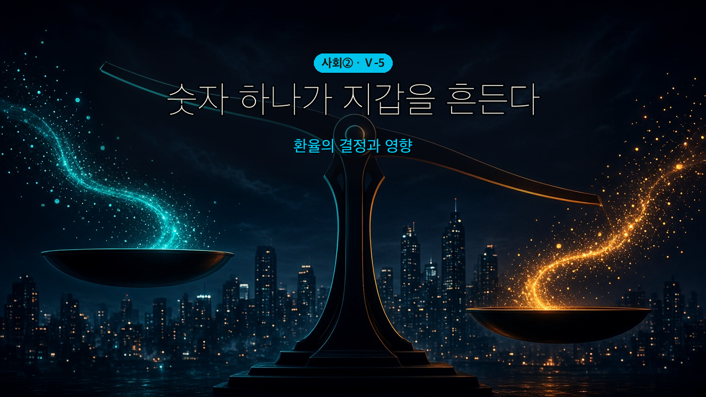
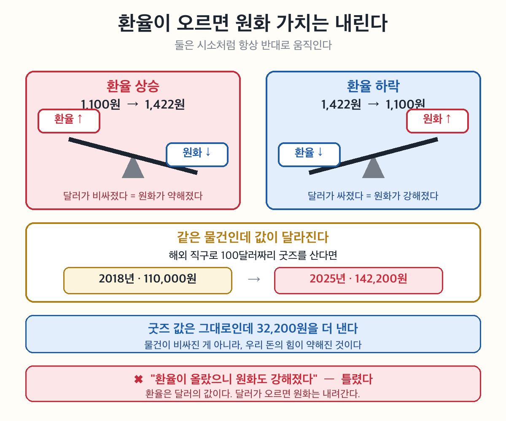

해외 직구할 때 '환율 오름' 뜨면 왜 비싸질까?
환율 = 두 나라 돈을 바꾸는 비율. 다르게 말하면 외화의 가격이다.
1달러 = 1,400원 이라고 쓴다. 이건 "달러라는 물건의 값이 1,400원" 이라는 뜻이다.
🔴 환율을 '물건 값'으로 읽는 순간 전부 쉬워진다.
• 환율이 오른다 = 달러가 비싸졌다
• 달러가 비싸졌다 = 원화로는 더 많이 줘야 한다
환율도 수요·공급으로 정해진다. 4단원에서 배운 그 원리 그대로다 — 달라진 건 상품이 달러라는 것뿐.
| 언제 생기나 | 환율은 | |
|---|---|---|
| 외화 수요 ↑ | 수입 증가·해외여행·유학 | 오른다 |
| 외화 공급 ↑ | 수출 증가·외국인 투자 유입 | 내린다 |
뒤집어 보면 — 달러를 사려는 사람이 많으면 달러 값(환율)이 오르고, 팔려는 사람이 많으면 내린다. 시장에서 사과값 정해지는 것과 똑같다.
🔴 가장 헷갈리는 지점. 둘은 항상 반대로 움직인다.
| 환율 | 원화 가치 | 뜻 | |
|---|---|---|---|
| 1달러 = 1,200원 | — | — | 기준 |
| 1달러 = 1,400원 | 올랐다 ↑ | 떨어졌다 ↓ | 달러 사려면 원화를 더 줘야 함 |
| 1달러 = 1,000원 | 내렸다 ↓ | 올랐다 ↑ | 원화를 덜 줘도 됨 |
외우는 법 — 환율은 달러의 값이다. 달러가 비싸지면 상대적으로 원화는 싸진 것이다. 시소를 떠올리면 된다.
환율이 오르면(원화 가치 ↓) 우리 생활은 이렇게 갈린다.
| 환율 상승 시 | 왜 | |
|---|---|---|
| 수출 | 유리 ✅ | 우리 물건이 외국에서 싸 보인다 |
| 수입 | 불리 ❌ | 같은 물건에 원화를 더 줘야 한다 |
| 국내 물가 | 오름 ❌ | 수입 원자재값이 올라 밀어 올린다 |
| 해외여행 | 불리 ❌ | 같은 여행에 돈이 더 든다 |
5-2와 이어진다 — 환율이 오르면 물가도 오른다. 5-2에서 배운 물가 상승 3원인 중 '생산비 상승' 이 바로 이 길이다.

🎙️ 환율 = 외화의 가격. 환율 ↑ = 원화 가치 ↓ = 수출 유리·수입/여행 불리. 환율도 외화의 수요·공급으로 결정(앞 단원 수요공급 원리).
- 환율의 의미와 결정 원리를 설명할 수 있다.
- 환율 변동이 우리 생활에 미치는 영향을 설명할 수 있다.
나라마다 다른 화폐를 쓰므로 무역·여행 시 그 나라 돈으로 바꿔야 한다. 이때 두 나라 화폐를 교환하는 비율이 ①환율이다. 미국 1달러를 얻는 데 우리 돈 1,100원이 필요하면 환율은 '1,100원/달러'로 적는다. 곧 환율은 외국 화폐의 ②가치이다.
(교과서 원문: "두 국가의 화폐를 교환하는 비율이 환율이다. … 환율은 달러당 1,100원이고, '1,100원/달러'로 표기한다. 즉, 환율은 외국 화폐의 가치(가격)이다." — 천재교육 사회②(구정화) 105쪽)
🎯 여기가 핵심! 환율 = 달러의 가격표. ② 답은 '가치(가격)' — 환율이 외화의 값이라는 점을 못 박으면, 3단계의 '환율↑=원화 가치↓'가 자연스럽게 이해된다.
📊 교과서 '1,100원'의 정체 — 2018년 평균 환율이다(World Bank 실측). 교과서가 낡은 게 아니라 그때 기준이라고 알려 줄 것. 이후: 2021 1,144 · 2022 1,291 · 2025 1,422.
⭐ 여기서 반드시 체감시킬 것 — 100달러 직구가 110,000원 → 142,200원. "3만 원 더" 라고 말하는 순간 학생 표정이 바뀐다. 숫자 300원은 안 와닿아도 3만 원은 와닿는다.
재화의 가격이 시장에서 수요와 공급으로 정해지듯, 외국 화폐의 가격인 환율도 그 외화의 ③수요와 ④공급으로 결정된다. 달러를 사려는 ③수요가 늘면 환율이 ⑤상승하고(원화 가치 하락), 달러가 들어와 ④공급이 늘면 환율이 ⑥하락한다(원화 가치 상승).
(교과서 원문: "외국 화폐의 가격인 환율도 그 외국 화폐의 수요와 공급으로 결정된다." — 천재교육 사회②(구정화) 105쪽)
🎯 여기가 핵심! 앞 단원(수요·공급)을 그대로 적용 — '상품' 자리에 '달러'. 달러 수요↑ → 곡선 오른쪽 이동 → 환율(달러 값)↑. 자료로 곡선 이동→환율 변동을 분석시키는 문항이 단골(결정론 그래프 영상과 연계).
환율이 1,100원에서 1,300원으로 오르면, 1달러를 얻는 데 더 많은 원화가 든다. 즉 환율 상승은 우리 돈의 가치가 ⑦하락한 것이다. 반대로 환율이 내리면 원화 가치는 ⑧상승한다.
(교과서 원문(탐구 길잡이): "달러 수요 증가 = 환율 상승 = 원화 가치 하락 = 달러 가치 상승 / 달러 공급 증가 = 환율 하락 = 원화 가치 상승 = 달러 가치 하락" — 천재교육 사회②(구정화) 105쪽)
🎯 여기가 핵심 — 최다 함정! 환율 상승 = 원화 가치 하락(거꾸로 외우기 1순위). 같은 1달러에 더 많은 원화가 필요 = 원화 한 장의 힘↓. '환율 상승=원화 강세'로 적으면 오답. 표(환율↑↔원화↓, 환율↓↔원화↑)를 외우게.

⭐ 판서는 시소 하나면 된다. 가로선 하나 긋고 양 끝에 환율 / 원화 가치만 써라. 한쪽을 올리면 다른 쪽이 내려가는 걸 손으로 보여줄 것. 말로 열 번보다 이 동작 한 번이 낫다.
🎯 왜 반대인가를 한 문장으로 — "환율은 애초에 달러의 값이다. 달러가 비싸지면 원화는 싸진 것이다." 두 사실이 아니라 같은 사실의 두 표현임을 못 박을 것.
⚠️ 학생 오답 1위 = "환율이 올랐으니 원화도 올랐다." OX·서술형 모두 여기서 갈린다.
📊 심화 — 통화쌍 (2026-08-27 신설·실측)
같은 시기에 원화가 달러엔 약해지고 엔엔 강해졌다. 원/달러 1,144→1,422(+24%) · 100엔당 1,042→869(−17%).
⭐ 교과서에 없는 내용이므로 시험 출제 금지. 다만 "환율이 올랐다" 를 학생이 하나의 사실처럼 받아들이는 것을 깨는 데 이만한 사례가 없다.
🎯 한 문장으로 닫을 것 — "환율 뉴스를 들으면 반드시 물어라: 어느 나라 돈에 대해서?"
💡 광고는 실물을 교육용으로 다시 그린 것(원본 2026-08-26 카톡 수신·천대현 제보). 회사 이름을 가상('마루마루몰')으로 바꾸고 로고·상품 사진을 뺐다 — ⓐ발행 학습지는 인터넷에 공개되므로 실제 기업 광고 이미지를 그대로 싣지 않고 ⓑ논쟁적 브랜드가 수업 시간을 잡아먹는 것을 피하며 ⓒ학생 시선이 환율 문구 한 줄에만 모이게 하기 위함이다. 구조·문구 배치·쿠폰 배너는 원본 그대로라 실감은 유지된다. 브랜드명은 의도적으로 뺐다 — 특정 기업 광고를 학습지에 싣지 않기 위함이고, 논쟁적 브랜드가 수업 시간을 잡아먹는 것도 피한다.
⚠️ 환율은 매일 바뀐다. 수업 전날 100엔당 원화를 확인하고, 광고 문구의 800원대가 여전히 맞는지 볼 것(맞지 않으면 그 자체가 좋은 소재 — "광고는 언제 쓴 걸까?").
🖼 인물 도트 출처 표기 (2026-09-03) — 4단계 선택 활동의 도트 6종은 xAI Grok Imagine으로 생성한 뒤 격자 스냅·투명화 후처리한 것이다.
🔴 라이선스 확인 구간이 있다 — xAI 약관이 2026-09-01 개정되며 산출물 표기가 권유에서 요구로 바뀐 정황이 있으나(역사 세션이 확보한 원문 2건은 여전히 권유형·x.ai 403으로 확정 불가), 학습지는 공개 배포되므로 표기를 남겨 두 해석을 모두 충족시킨다. 상세·되돌리기 경로는 `worksheets/images/people/CREDITS.md`.
⚠️ 조건이 확정되어 부적합으로 판명되면 D안(LPC 몸체 + 자작 소품)으로 즉시 교체 가능하다(산출물 보관 중).
🎙️ 예능 대사 인용 — 출처와 주의 (2026-09-02 신설)
원 장면 = MBC 「나 혼자 산다」 전현무 카자흐스탄 편(260814~15 방송). 유튜브 공식 클립 `Prk_xX0iGFM` 15:17~15:40(인천공항 출국 전 대화)·21:08(알마티 도착 후 "달러 안 써?"). 자막 실물로 확인했다.
🔴 프로그램명·링크를 학습지에 넣지 않았다 — 이 편은 즉흥 여행 조작·협찬 논란이 진행 중이고(연합뉴스TV·YTN 보도), 학습지는 인터넷에 공개되어 남는다. 논란은 몇 달 뒤 학생에게 아무 의미가 없지만 링크는 남는다. 대사만 가져오면 개념은 살고 논란은 안 따라온다. 수업 중 구두 언급은 교사 판단.
⚠️ 주의 — 카자흐스탄 공항이 아니라 인천공항 장면이다. 천대현의 기억은 "카자흐스탄 공항"이었으나 자막 확인 결과 출국 전 대화였다.
>
💡 카드도 환율이 적용되는가 — 답: 그렇다 (실조회 확인)
· 카드 해외 결제는 매입(전표 접수) 시점의 전신환매도율로 환산된다 — 결제한 그 순간이 아니라 며칠 뒤 환율이다.
· 국제브랜드 수수료 약 1%(비자는 1%→1.1% 인상 예정)가 붙는다.
· 🔴 DCC(현지에서 원화로 결제)를 고르면 이중 환전이 일어나 웃돈이 3~8%에 달할 수 있다. 해외에서는 반드시 현지 통화로 결제할 것 — 학생이 나중에 실제로 쓸 지식이라 물어보면 알려줄 만하다.
· 출처: 신한카드 해외 종합 이용안내 · iM뱅크 원화결제서비스(DCC) 안내 · 나무위키 「자국 통화 결제」(2026-09-02 조회)
⭐ 교실에서 쓸 한 줄 — "카드는 환율을 피하는 게 아니라 미루는 거야. 그리고 미룬 값에 수수료가 붙지."
환율이 오르면(원화 약세) 우리 수출품이 외국에서 싸져 ⑨수출이 늘지만, 수입 원자재 값이 올라 국내 물가가 오르고 해외여행·유학 비용이 비싸진다. 환율이 내리면(원화 강세) 수입품이 싸져 물가가 안정되지만, 수출이 줄어 국내 기업의 생산이 위축되고 ⑩실업이 늘 수 있다.
(교과서 원문(표): 환율 상승 — 수출↑→생산·고용↑ / 수입 원자재↑→물가↑·외채 부담↑. 환율 하락 — 수입 원자재↓→물가 안정·외채 부담↓ / 수입↑→생산 위축·고용↓·실업↑ — 천재교육 사회②(구정화) 105쪽)
🎯 여기가 핵심! 환율 상승 표: 수출↑·물가↑·외채↑·여행 불리. 환율 하락 표: 수입↑·물가 안정·실업↑·여행 유리. 'A가 오르면 B는?' 자료해석이 시험 단골. 한쪽이 유리하면 한쪽이 불리(수출 vs 수입·여행)라는 양면을 강조.
| 환율 상승(원화 약세) | 환율 하락(원화 강세) | |
| 수출 | 유리 ✅ | 불리 ❌ |
| 수입 | 불리 ❌ | 유리 ✅ |
| 국내 물가 | 오름 ❌ | 안정 ✅ |
| 해외여행·직구 | 불리 ❌ | 유리 ✅ |
| 외채 부담 | 커짐 ❌ | 줄어듦 ✅ |
🎯 표를 통째로 외우게 하지 말 것. "환율이 오르면 우리 물건은 싸 보이고, 남의 물건은 비싸진다" 한 줄만 잡으면 다섯 줄이 다 따라온다.
🔗 단원 연결 2개를 반드시 호명 — ⓐ 5-4의 세 관문(관세·통관·환율) 중 마지막 ⓑ 환율↑ → 수입 원자재값↑ → 5-2의 물가 상승 3원인 중 '생산비 상승'. 이 두 줄이 Ⅴ단원을 하나로 묶는다.
1. 40달러 × 1,100 = 44,000원 / 40달러 × 1,400 = 56,000원
💡 계산이 막히면 40 × 11 = 440, 뒤에 0 두 개 로 잡아 줄 것.
2. 차이 12,000원. 굿즈 가격은 변하지 않았다(40달러 그대로).
⭐ 이 문항이 활동의 심장이다. 물건 값은 그대로인데 내가 낼 돈이 늘었다 → 원화의 힘이 약해진 것. 여기서 '가치'라는 말이 몸으로 이해된다.
3. 웃는다. 원화 약세라 우리 물건이 외국에서 싸 보여 수출에 유리하다.
⭐ 2026-08-27 개정 — 옛 발문 "이때 수출 기업은" 은 '이때'가 무엇인지 문항 안에 없었다. 1·2번은 직구하는 나의 계산인데 3번에서 주어가 수출 기업으로 바뀌므로, 환율 1,100→1,400 상황임을 발문에 다시 적었다. 또 마무리 입담이 "직구하는 나는 손해, 수출 기업은 이득" 이라며 3번 답을 먼저 말하고 있어 신문 읽는 법으로 바꿨다.
채점 — 상: 외국에서 싸 보인다는 메커니즘까지 / 중: 유리하다고만 씀 / 하: 방향이 반대.
4. 비싸지는 것 = 직구·해외여행·수입 과일·기름값 등 / 유리해지는 것 = 수출·외국인 관광객 유입 등.
🎯 "한쪽이 웃으면 한쪽이 운다"로 닫을 것. 뉴스가 "환율이 올랐다"고 할 때 누구에게 좋고 나쁜지를 따로 물어야 한다는 감각이 이 차시의 최종 산출이다.
⚠️ 환율 수치는 계산이 쉽도록 고른 값이다(실제 2025년 평균은 1,422원). 학생이 물으면 실제 값을 알려줄 것.
5. 광고 읽기
⑴ 엔화가 싸졌기 때문이다. 같은 10,000엔짜리 물건을 살 때 예전보다 원화를 덜 내도 되므로, 광고는 지금이 유리하다고 말한다.
⑵ "엔화가 1,000원대로 올랐으니 일본 직구는 미루세요" 류. 광고가 반대로 뒤집힌다는 것을 알면 환율 방향과 유불리 관계를 이해한 것이다.
🎯 채점보다 대화용 문항이다. 정답 확인 후 "이 광고는 누가 왜 보냈을까?" 로 한 걸음 더 — 광고를 만든 쪽은 환율을 알고 있다는 점이 이 문항의 진짜 수확이다.
⚠️ ⑴에서 "세일해서"·"쿠폰 줘서" 라고 답하면 환율이 아니라 할인으로 읽은 것이다. 이때 "쿠폰이 없어도 싸졌을까?" 로 되물을 것.
| 번호 | 문장 | O/X |
| 1 | 환율은 두 나라 화폐를 교환하는 비율로, 외국 화폐의 가격이다. | O |
| 2 | 환율은 정부가 정한 고정된 값으로, 변하지 않는다. | X |
| 3 | 달러의 수요가 늘면 환율이 오르고 원화 가치는 떨어진다. | O |
| 4 | 환율이 오르면 우리 수출품이 외국에서 싸져 수출에 유리하다. | O |
| 5 | 환율이 오르면 해외여행·유학 비용이 줄어든다. | X |
OX 해설: 1 O — 환율=외화의 가격. 2 X: 환율은 외화의 수요·공급에 따라 오르내린다(고정 아님). 3 O — 달러 수요↑→환율↑→원화 가치↓. 4 O — 환율↑(원화 약세)→수출 유리. 5 X — 핵심 함정: 환율↑이면 같은 외화에 더 많은 원화 필요 → 해외여행·유학 비용은 늘어난다.
나와야 할 것 (택 3): ①환율이 오르면 원화 가치는 반대로 떨어진다 ②환율은 외화의 수요·공급으로 정해진다 ③환율이 오르면 수출은 유리하고 수입은 불리하다 ④환율은 외국 화폐의 가격이다.
🎯 오개념 포착 — "환율이 오르면 원화 가치도 오른다" 가 나오면 3단계가 안 박힌 것이다. 이 한 줄만은 반드시 확인할 것.
🔗 마무리 멘트 — "Ⅴ단원에서 나라 경제를 보는 자를 넷 얻었다: GDP(몸집)·물가와 실업(체온)·국제 거래(관계)·환율(그 관계의 가격표)."
모범답안 예시: "환율이 오르면 원화 가치가 떨어지므로, 같은 외화를 얻는 데 더 많은 원화가 필요해 해외여행자는 비용이 늘어 불리하다. 반면 수출 기업은 우리 제품이 외국에서 싸져 더 잘 팔리므로 유리하다."
- 상: '환율↑=원화 가치↓'를 근거로, 해외여행자(불리)와 수출 기업(유리)을 각각 정확히 판단·서술.
- 중: 유·불리는 맞게 구분했으나 '원화 가치' 근거 연결이 약함.
- 하: 한쪽만 언급하거나 유·불리를 반대로 서술.